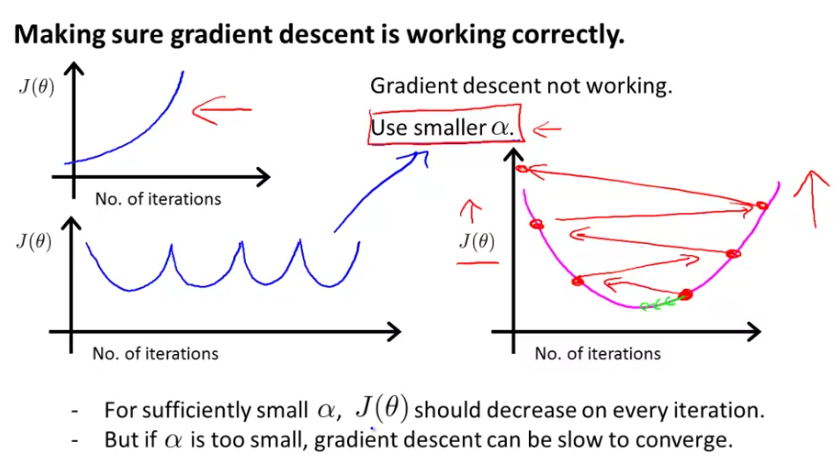
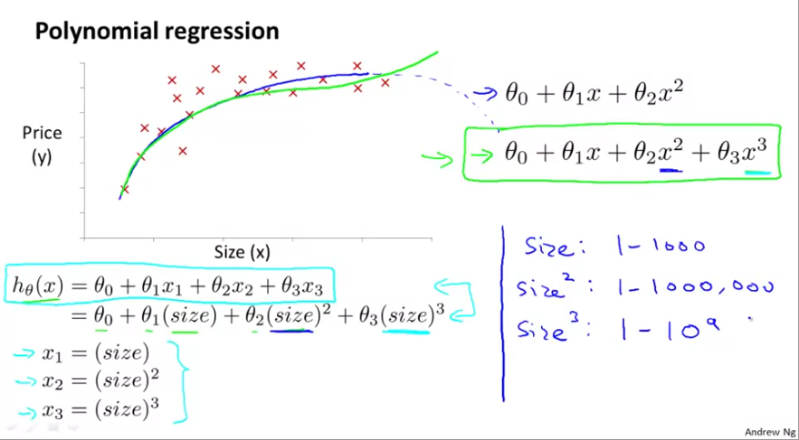

Solving multivariate linear regression using Gradient Descent
Note: This is a continuation of Gradient Descent topic. The context and equations used here derive from that article.
When we regress for y using multiple predictors of x, the hypothesis function becomes:
$$ h_{\theta}(x) = \theta_{0} + \theta_{1}x_{1} + \theta_{2}x_{2} + \theta_{3}x_{3} + ... + \theta_{n}x_{n} $$ If we consider $x_{0} = 1$, then the above can be represented as matrix multiplication using linear algebra.
$$ x = \begin{bmatrix} x_{0}\\ x_{1}\\ \vdots\\ x_{n} \end{bmatrix} \ and \ \theta=\begin{bmatrix} \theta_{0}\\ \theta_{1}\\ \vdots\\ \theta_{n} \end{bmatrix} $$
Thus,
$$
h_{\theta}(x) = \theta^{T}x
$$
Here the dimensions of $\theta$ and x is n+1 as this goes from 0 to n.
Loss function of multivariate linear regression
The loss function is given by
$$ J(\theta_{0}, \theta_{1},...,\theta_{n}) = \frac{1}{2m}\sum_{i=1}^{m}[h_{\theta}(x^{(i)}) - y^{(i)}]^{2} $$
which you can simplify to
$$ J(\theta) = \frac{1}{2m}\sum_{i=1}^{m}[h_{\theta}(x^{(i)}) - y^{(i)}]^{2} $$
The gradient descent of the loss function is now
$$
\theta_{j} := \theta_{j} - \alpha\frac{\partial}{\partial\theta_{j}}J(\theta)
$$
Note: Here j represents the n+1 features (attributes) and i goes from 1 -> m representing the m records.
Simplifying the partial differential equation, we get the n+1 update rules as follows
$$ \theta_{0} := \theta_{0} - \alpha \frac{1}{m}\sum_{i=1}^{m}[h_{\theta}(x^{(i)}) - y^{(i)}]x_{0}^{{(i)}} $$ $$ \theta_{1} := \theta_{1} - \alpha \frac{1}{m}\sum_{i=1}^{m}[h_{\theta}(x^{(i)}) - y^{(i)}]x_{1}^{{(i)}} $$ $$ \vdots $$ $$ \theta_{n} := \theta_{n} - \alpha \frac{1}{m}\sum_{i=1}^{m}[h_{\theta}(x^{(i)}) - y^{(i)}]x_{n}^{{(i)}} $$
The equations above are very similar to ones from simple linear equations.
Impact of scaling on Gradient Descent
When the data ranges of features varies quite a bit from each other, the surface of GD is highly skewed as shown below:

This is because $\theta$ (which is our weights) will descend quickly on small ranges and slowly on large ranges, and so will oscillate inefficiently down to the optimum when the variables are very uneven. When scaled, the surface takes a healthier shape, allowing the algorithm to converge faster. Ideally scale values so they fall within -1 to 1.
Scaling methods
Feature Scaling is simply dividing values by range. Normalization is when you transform them to have a mean = 0.
Mean normalization
$$
scaled \ x_{j} = \frac{(x_{j} - \mu_{j})}{s_{j}}
$$
where $\mu$ is mean and s is range.
Standard normalization is similar to above, except, s is standard deviation.
The exact range of normalization is less important than having all features follow a particular range.
Debugging Gradient Descent
The general premise is, as number of iterations increase, the loss should reduce. You can also declare a threshold and if the loss reduces below that for n number of iterations, then you can declare convergence. However, Andrew Ng suggests against this and suggests visualizing the loss on a chart to pick LR.
When LR is too high: If you have a diverging graph - loss increases steadily or if the loss is oscillating (pic below), it is likely the the rate is too high. In case of oscillation, the weights sporadically hit the local minima but continue to overshoot.

Iterating through a number of LRs: Andrew suggests picking a range of LRs 0.001, 0.01, 0.1, 1, ... and iterating through them. He typically bumps rates by a factor of 10. For convenience, he picks ..0.001, 0.003, 0.01, 0.03, 0.1, 0.3.. where he bumps by ~3 which is also effective.
Non-linear functions vs non-linear models
A linear function is one which produces a straight line. It is typically of the form $y = \theta_{0} + \theta_{1}x_{1}$. A non-linear function is something that produces a curve. It is typically of the from $y = \theta_{0} + \theta_{1}x^{k}$. A linear model is when the model parameters are additive, even though individual parameters are non-linear. It takes form $y = \theta_{0} + \theta_{1}x_{1} + ... + \theta_{n}x_{n}$. A non-linear model is when the model parameters are multiplicative even though they are of order 1. It typically takes form $y = \theta_{0}x_{1}theta_{1}x_{2}^{k}x_{3}$ etc.
Representing non-linearity using Polynomial Regression
Sometimes, when you plot the response variable with one of the predictors, it may not take a linear form. You might want an order 2 or 3 curve. You can still represent them using linear models. Consider the case where square footage is one of the parameters in predicting house price and you notice a non-linear relationship. From the graphic below, you might try a quadratic model as $h_{\theta}(x) = \theta_{0} + \theta_{1}x_{1} + \theta_{2}x_{2}^{2}$. But this model will eventually taper off. Instead, you may try a cubic model as $h_{\theta}(x) = \theta_{0} + \theta_{1}x_{1} + \theta_{2}x_{2}^{2} + \theta_{3}x_{3}^{3}$.

The way to represent non-linearity is to sequentially raise the power / order of the parameter, represent them as additional features. This is a step in feature engineering. This method is called polynomial regression. When you raise the power, the range of that parameter also increases exponentially. Thus you model might become highly skewed. It is vital to scale features in a polynomial regression.
Another option here is, instead of raising power, you take square roots or nth roots, such as: $h_{\theta}(x) = \theta_{0} + \theta_{1}x_{1} + \theta_{2}\sqrt{x_{2}} + \theta_{3}\sqrt[3]{x_{3}}$